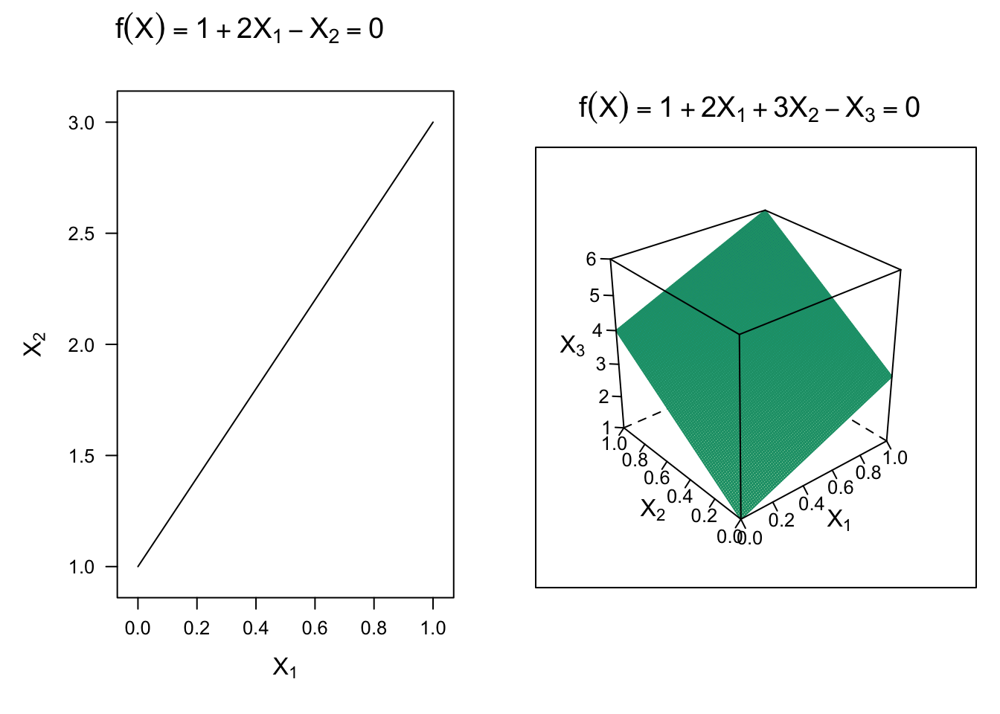

Lesson 8
Support Vector Machines
Learning Objectives
After this lesson, students will be able to:
Describe the support vector machine (SVM) approach to classification.
Use the
tidymodelsworkflow to fit and tune various SVM classification models.
Readings, etc.
For this lesson, refer to the following readings, etc.:
Read chapter 9 from of An Introduction to Statistical Learning (Tibshirani, James, and Trevor 2017). You may also want to read chapter 9 of Statistical Learning with Math and R (Suzuki 2020).
Overview
Support Vector Machines (SVM) are a class of powerful machine learning algorithms commonly used for classification tasks. The fundamental principle behind SVM is to find a hyperplane that maximizes the margin between different classes in the data. This hyperplane serves as the decision boundary, where data points are classified into one of two or more classes based on their position relative to the hyperplane. SVM is particularly effective in scenarios where the classes are well-separated and works well in high-dimensional spaces. The choice of the kernel function in SVM allows it to handle non-linear data by mapping it to a higher-dimensional space, making it versatile for a wide range of classification problems.
Variations of SVM include: - Support Vector Machine with a Linear Kernel (Linear SVM) - Support Vector Machine with a Polynomial Kernel (Polynomial SVM) - Support Vector Machine with a Radial Basis Function Kernel (RBF SVM)
These variations offer flexibility to adapt to different data distributions. Additionally, SVM can be extended to multiclass classification by using techniques like one-vs-all. Despite its effectiveness, SVM’s performance can be sensitive to the choice of kernel and hyperparameters, and it may be computationally expensive for large datasets. However, it remains a valuable tool in the machine learning toolkit, especially when dealing with well-defined classes and both linear and non-linear data.
Code
# Construct data for plotting
x1 <- x2 <- seq(from = 0, to = 1, length = 100)
xgrid <- expand.grid(x1 = x1, x2 = x2)
y1 <- 1 + 2 * x1
y2 <- 1 + 2 * xgrid$x1 + 3 * xgrid$x2
# Hyperplane: p = 2
p1 <- lattice::xyplot(
x = y1 ~ x1,
type = "l",
col = "black",
xlab = expression(X[1]),
ylab = expression(X[2]),
main = expression({f(X)==1+2*X[1]-X[2]}==0),
scales = list(tck = c(1, 0))
)
# Hyperplane: p = 3
p2 <- lattice::wireframe(
x = y2 ~ xgrid$x1 * xgrid$x2,
xlab = expression(X[1]),
ylab = expression(X[2]),
zlab = expression(X[3]),
main = expression({f(X)==1+2*X[1]+3*X[2]-X[3]}==0),
drape = TRUE,
colorkey = FALSE,
col = dark2[1],
scales = list(arrows = FALSE)
# par.settings = list(axis.line = list(col = "transparent"))
)
# Display plots side by side
gridExtra::grid.arrange(p1, p2, nrow = 1)
Support Vector Machine Approaches
Maximal Marginal Classifier


Summary
Support Vector Machines (SVM) are a powerful and versatile class of supervised machine learning algorithms for classification.
Key Concepts
Maximizing Margin: SVM’s primary objective is to find a decision boundary that maximizes the margin between different classes of data points. This boundary is called the “hyperplane.”
Linear Separability: SVM works well when data is linearly separable, meaning that it can be separated by a straight line (in 2D), a plane (in 3D), or a hyperplane (in higher dimensions).
Support Vectors: The data points that are closest to the hyperplane and influence its position are called “support vectors.” These support vectors play a crucial role in defining the decision boundary.
Kernel Tricks: SVM can handle non-linear data by applying kernel functions (e.g., polynomial, radial basis function) that transform the data into a higher-dimensional space, where it becomes linearly separable.
SVM Classification Process
Data Preparation: SVM begins with labeled training data, where each data point is associated with a class label.
Model Training: The SVM algorithm learns the optimal hyperplane that best separates the classes while maximizing the margin. The hyperplane equation can be expressed as \(f(x) = \mathbf{w} \cdot \mathbf{x} + b\), where \(\mathbf{w}\) is the weight vector and \(b\) is the bias term.
Margin Calculation: The margin is determined by the distance between the hyperplane and the nearest support vectors from each class.
Classification: To predict the class of a new data point, SVM evaluates \(f(x)\). If \(f(x) > 0\), the point is classified into one class; if \(f(x) < 0\), it’s classified into the other class.
Hyperparameter Tuning
C Parameter: It controls the trade-off between maximizing the margin and minimizing the classification error. Smaller values of C create a wider margin but may misclassify some points, while larger values of C lead to a narrower margin but fewer misclassifications.
Kernel Type: The choice of kernel function, such as linear, polynomial, or radial basis function, can significantly impact the model’s ability to handle non-linear data.
Advantages of SVM
- Effective in high-dimensional spaces.
- Robust against overfitting.
- Suitable for small to large datasets.
- Works well with both linear and non-linear data.
Limitations
- Computationally expensive for large datasets.
- Sensitivity to the choice of kernel and hyperparameters.
- Can be challenging to interpret in high-dimensional spaces.
SVM is a versatile algorithm widely used for classification tasks, especially when dealing with well-defined classes and both linear and non-linear data. It’s essential to understand its hyperparameters and the choice of kernel functions to maximize its effectiveness in different scenarios.
References
Suzuki, Joe. 2020. Statistical Learning with Math and r. Springer.
Tibshirani, Hastie Robert, Gareth James, and Daniela Witten Trevor. 2017. An Introduction to Statistical Learning. springer publication.
Expand for Session Info
─ Session info ───────────────────────────────────────────────────────────────
setting value
version R version 4.3.1 (2023-06-16)
os macOS Sonoma 14.0
system aarch64, darwin20
ui X11
language (EN)
collate en_US.UTF-8
ctype en_US.UTF-8
tz America/New_York
date 2023-10-24
pandoc 3.1.8 @ /opt/homebrew/bin/ (via rmarkdown)
quarto 1.3.450 @ /usr/local/bin/quarto
─ Packages ───────────────────────────────────────────────────────────────────
package * version date (UTC) lib source
broom * 1.0.5 2023-06-09 [1] CRAN (R 4.3.0)
caret * 6.0-94 2023-03-21 [1] CRAN (R 4.3.0)
dials * 1.2.0 2023-04-03 [1] CRAN (R 4.3.0)
dplyr * 1.1.3 2023-09-03 [1] CRAN (R 4.3.0)
forcats * 1.0.0 2023-01-29 [1] CRAN (R 4.3.0)
ggplot2 * 3.4.4 2023-10-12 [1] CRAN (R 4.3.1)
infer * 1.0.5 2023-09-06 [1] CRAN (R 4.3.0)
ISLR2 * 1.3-2 2022-11-20 [1] CRAN (R 4.3.0)
kernlab * 0.9-32 2023-01-31 [1] CRAN (R 4.3.0)
lattice * 0.21-9 2023-10-01 [1] CRAN (R 4.3.1)
lubridate * 1.9.3 2023-09-27 [1] CRAN (R 4.3.1)
modeldata * 1.2.0 2023-08-09 [1] CRAN (R 4.3.0)
parsnip * 1.1.1 2023-08-17 [1] CRAN (R 4.3.0)
pdp * 0.8.1 2022-06-07 [1] CRAN (R 4.3.0)
purrr * 1.0.2 2023-08-10 [1] CRAN (R 4.3.0)
readr * 2.1.4 2023-02-10 [1] CRAN (R 4.3.0)
recipes * 1.0.8 2023-08-25 [1] CRAN (R 4.3.0)
rsample * 1.2.0 2023-08-23 [1] CRAN (R 4.3.0)
scales * 1.2.1 2022-08-20 [1] CRAN (R 4.3.0)
sessioninfo * 1.2.2 2021-12-06 [1] CRAN (R 4.3.0)
stringr * 1.5.0 2022-12-02 [1] CRAN (R 4.3.0)
svmpath * 0.970 2020-07-14 [1] CRAN (R 4.3.0)
tibble * 3.2.1 2023-03-20 [1] CRAN (R 4.3.0)
tidymodels * 1.1.1 2023-08-24 [1] CRAN (R 4.3.0)
tidyr * 1.3.0 2023-01-24 [1] CRAN (R 4.3.0)
tidyverse * 2.0.0 2023-02-22 [1] CRAN (R 4.3.0)
tune * 1.1.2 2023-08-23 [1] CRAN (R 4.3.0)
vip * 0.4.1 2023-08-21 [1] CRAN (R 4.3.0)
workflows * 1.1.3 2023-02-22 [1] CRAN (R 4.3.0)
workflowsets * 1.0.1 2023-04-06 [1] CRAN (R 4.3.0)
yardstick * 1.2.0 2023-04-21 [1] CRAN (R 4.3.0)
[1] /Library/Frameworks/R.framework/Versions/4.3-arm64/Resources/library
──────────────────────────────────────────────────────────────────────────────
Reuse
CC BY-NC-SA 4.0